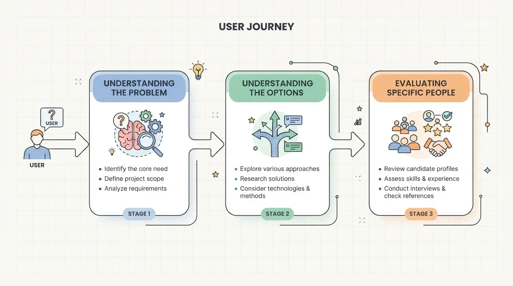

Nobody's first search is your name. By the time someone actually calls you, books a consultation, or sends a message, they've usually already typed several different things into a search bar, often over several days, sometimes over several weeks. You never see any of that. You just see the moment they finally reach out, and assume that's where the decision started.
It didn't. The decision started earlier, in a string of searches that had nothing to do with your name and everything to do with understanding their own situation. If your content isn't showing up anywhere in that earlier sequence, you're missing the part of the journey where trust actually gets built.
The Search Doesn't Start With a Need for a Professional
It starts with a need for an answer. Someone dealing with a difficult divorce doesn't search "divorce attorney" first. They search things like "how long does a divorce take" or "do I need a lawyer if we agree on everything." Someone whose knee has been bothering them for weeks doesn't search "physical therapist" first. They search "why does my knee hurt going up stairs" or "is it normal for knee pain to come and go."
These early searches are informational, not transactional. The person isn't ready to hire anyone yet. They're trying to understand what's happening to them, and whether it's serious enough to need help at all.
The Sequence Most People Actually Follow
Across most service categories, the pattern looks roughly the same, even though the specific words change completely.
Stage One: Understanding the Problem
Broad, symptom-based, or situation-based questions. "Why does this keep happening," "is this normal," "what does this mean." No mention of any profession yet.
Stage Two: Understanding the Options
The person now knows roughly what category of help they need, and starts comparing approaches. "Do I need a lawyer or can I handle this myself," "physical therapy versus a personal trainer for this," "is it worth hiring an agent to sell a house myself."

Stage Three: Evaluating Specific People
Only now does the search include a profession, and often a location. "Family lawyer near me," "personal trainer for beginners," "real estate agent reviews." This is the stage most professionals design their entire website around, while completely skipping the two stages that happened before it.
Why This Matters for What You Publish
If your website only speaks to stage three, the transactional stage, you're invisible during stages one and two, the exact moments when someone is forming their first impression of what kind of help actually exists and who seems trustworthy. Showing up earlier, with content that genuinely answers a stage-one or stage-two question, means someone may encounter your name well before they're ready to reach out, and already associate it with a clear, useful answer by the time they are.
This is exactly the role a well-built FAQ section or a handful of service pages can play, answering the real, specific questions people are typing in stages one and two, in plain language, before they've decided who to call.
How to Find Your Own Version of This Sequence
You don't need expensive tools to figure this out. Start typing the early, uncertain version of your own service into a search bar and watch what autocomplete suggests, that's a direct window into what real people are actually asking. Look at the "people also ask" questions that appear in search results for your field, they're pulled directly from real search behavior. And most usefully, pay attention to the actual questions clients ask you during a first call, before they've committed to anything. Those questions are the ones a stranger is typing right now, somewhere earlier in their own version of this same sequence.
The Bottom Line
The call you get is the end of a search journey, not the beginning of one. If your content only exists for the very last stage of that journey, you're competing for attention only in the most crowded, most expensive part of it. Showing up earlier, with real answers to the questions people ask before they're ready to hire anyone, is often the quieter, cheaper way to become the name they already trust by the time they finally do decide to call.
Want your site to show up earlier in your client's search journey, not just at the very end?
At Evida Studio, we build FAQ and service content around the real questions people ask before they're ready to reach out.
Let's Talk About Your Project